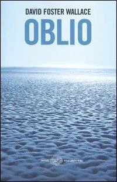
Image credits.
Cover images and film posters identify the works in this personal collection. Artwork reproductions come from the Art Institute of Chicago’s collection. Copyright in covers, posters and artwork remains with the respective artists, publishers and rights holders. Follow each source for the original record and its credits.
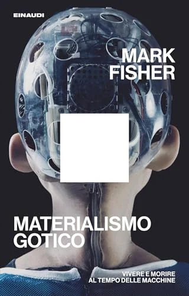
Materialismo gotico: Vivere e morire al tempo delle macchine
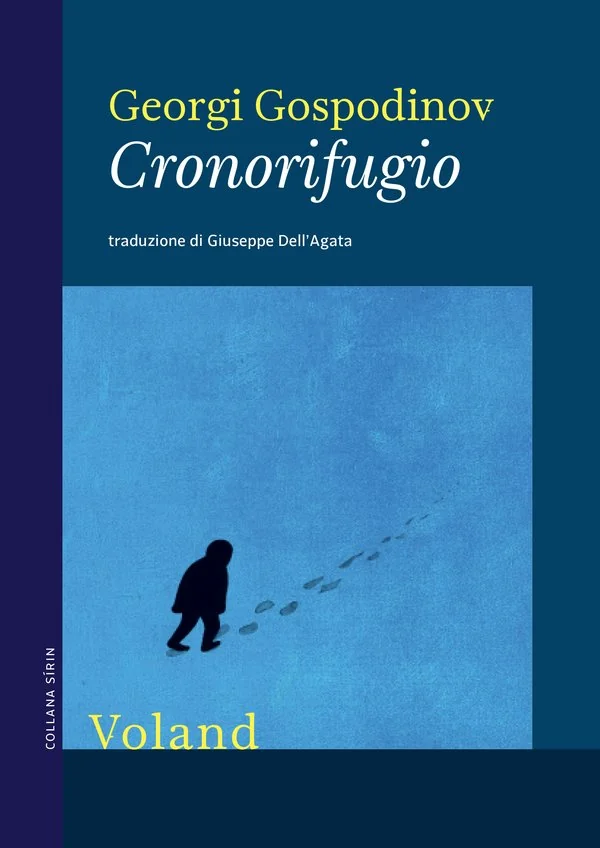
Cronorifugio
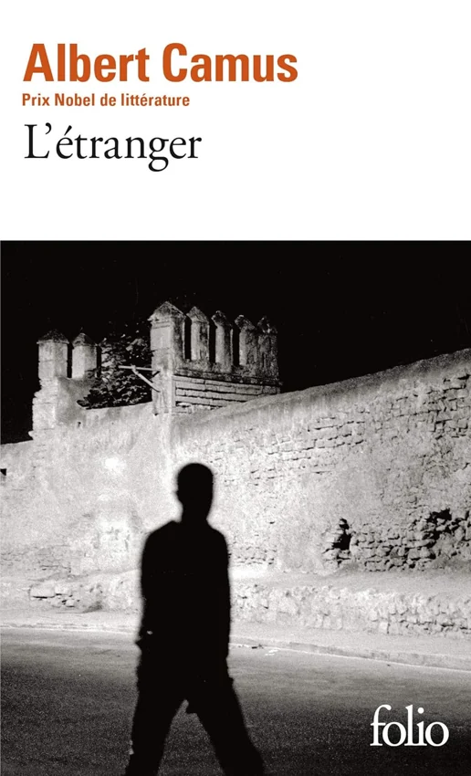
L'Étranger
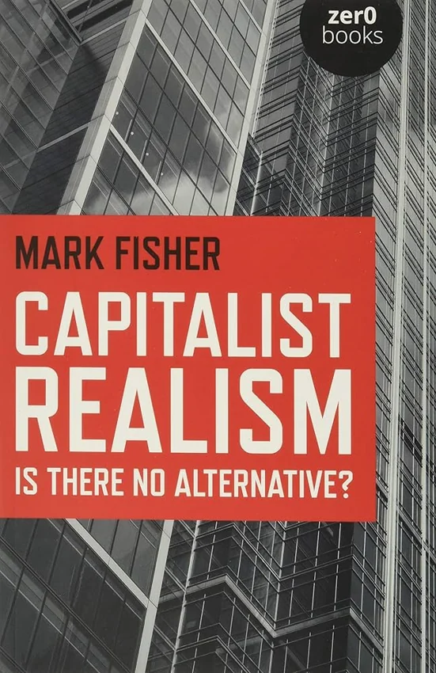
Capitalist Realism: Is There No Alternative?
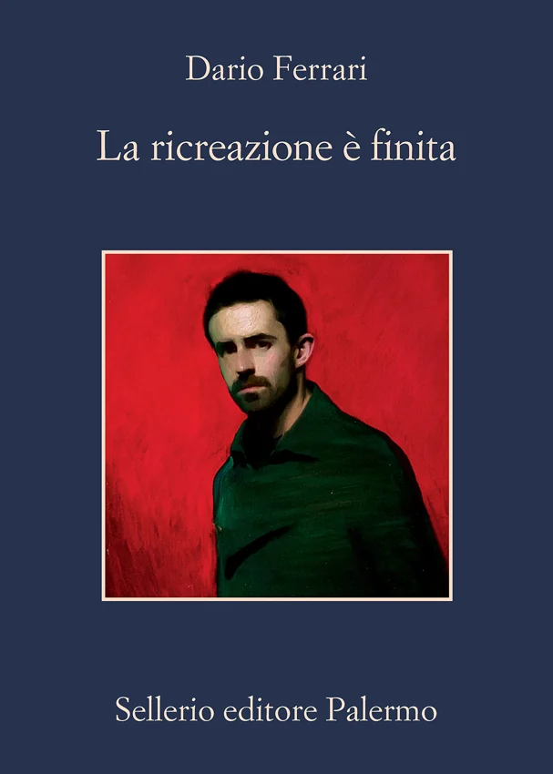
La ricreazione è finita
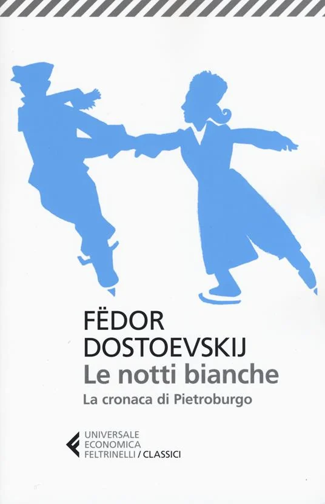
Le notti bianche / La cronaca di Pietroburgo
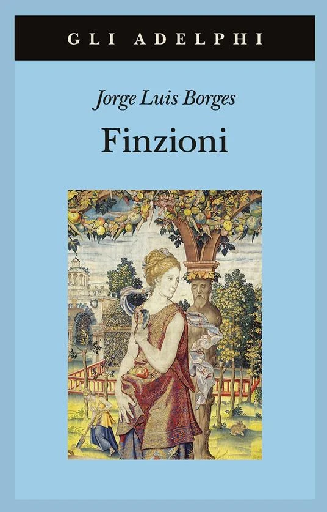
Finzioni
Il Maestro e Margherita
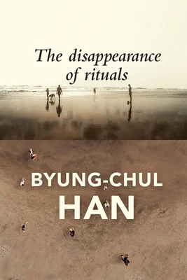
The Disappearance of Rituals: A Topology of the Present

Gli anni
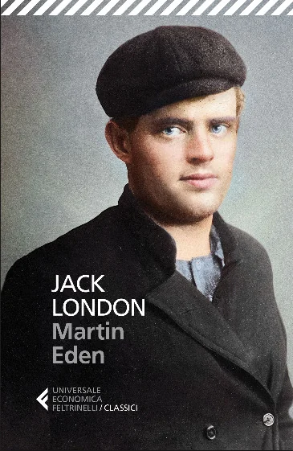
Martin Eden
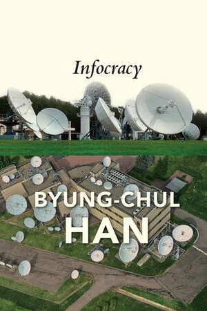
Infocracy: Digitization and the Crisis of Democracy
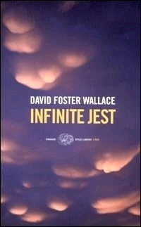
Infinite Jest
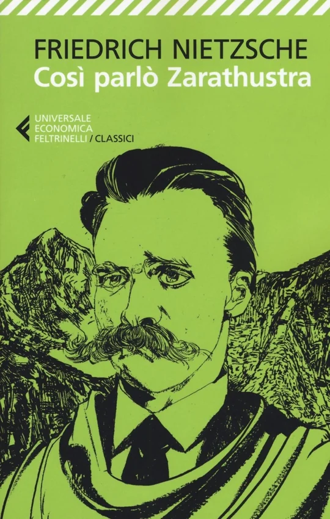
Così parlò Zarathustra
Inventing the Future (revised and updated edition): Postcapitalism and a World Without Work
Delitto e castigo
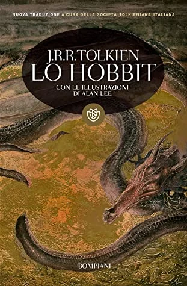
Lo Hobbit
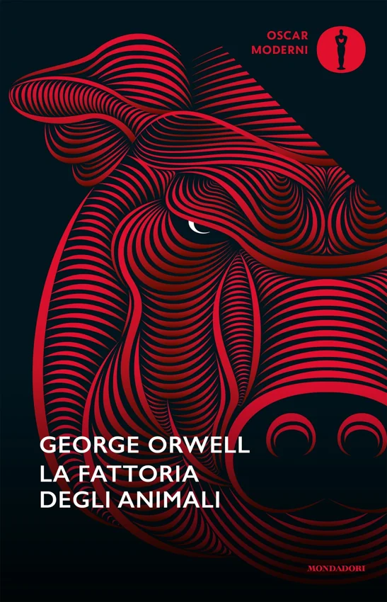
La fattoria degli animali
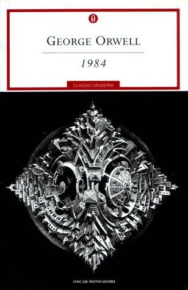
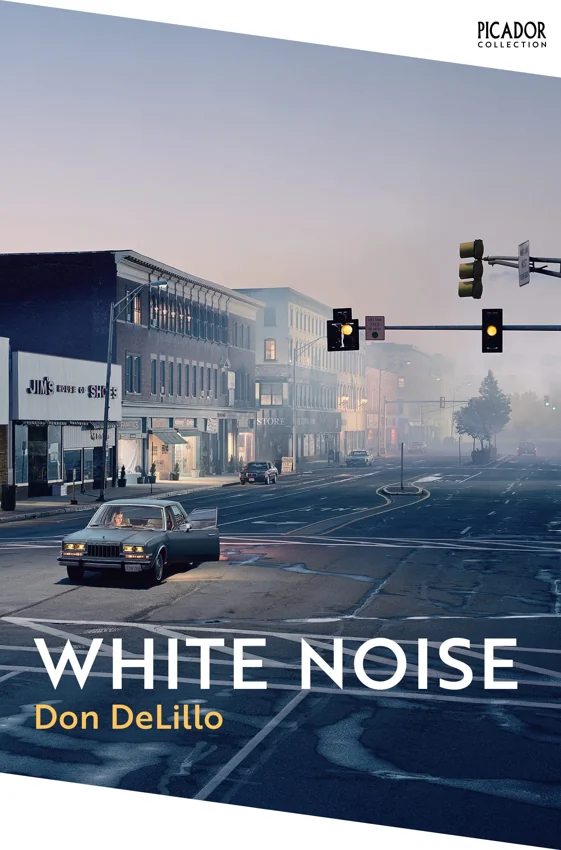
White Noise
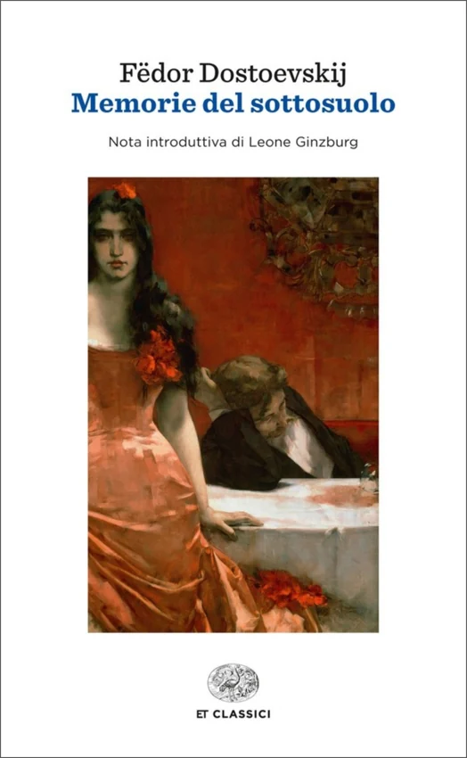
Memorie del sottosuolo
La scopa del sistema
The Idiot
Il Castello
The Communist Manifesto
Siddhartha
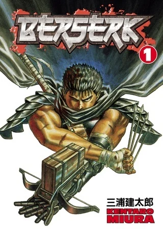
Berserk, Vol. 1 (Berserk, #1)
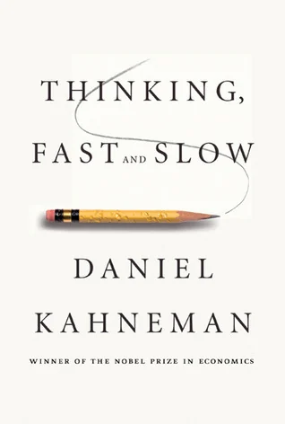
Thinking, Fast and Slow
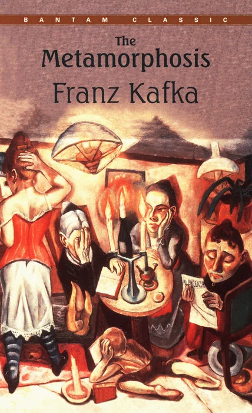
The Metamorphosis
Fahrenheit 451
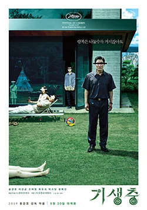
Parasite
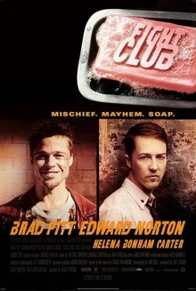
Fight Club
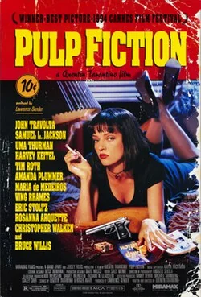
Pulp Fiction
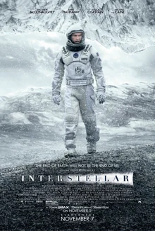
Interstellar
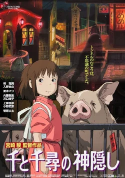
Spirited Away
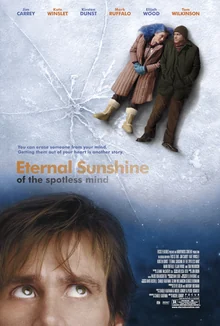
Eternal Sunshine of the Spotless Mind
Kill Bill: Vol. 1
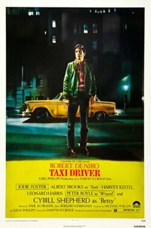
Taxi Driver
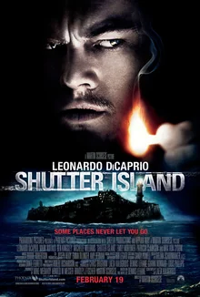
Shutter Island
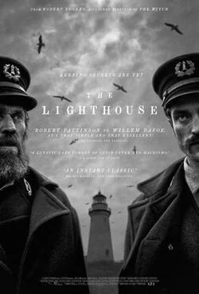
The Lighthouse
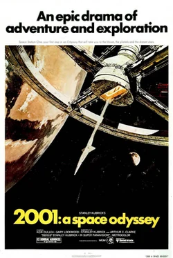
2001: A Space Odyssey
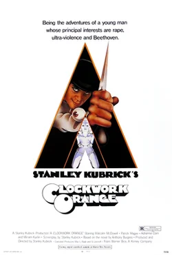
A Clockwork Orange
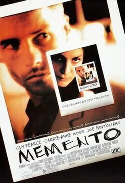
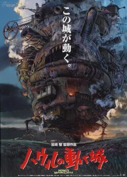
Howl's Moving Castle
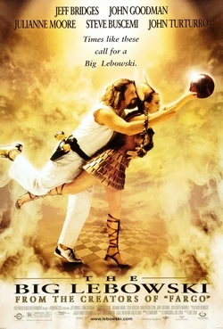
The Big Lebowski
Trainspotting
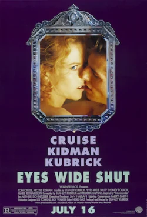
Eyes Wide Shut
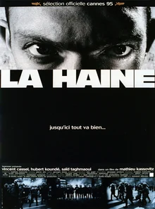
La Haine
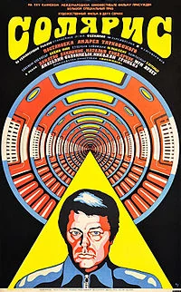
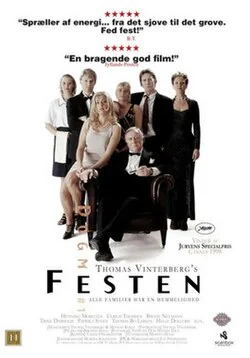
The Celebration
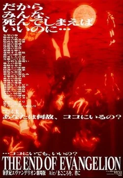
Neon Genesis Evangelion: The End of Evangelion
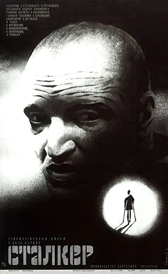
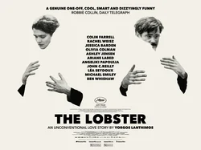
The Lobster
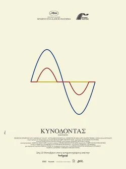
Dogtooth
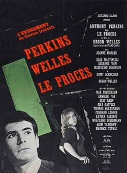
The Trial

Aftersun
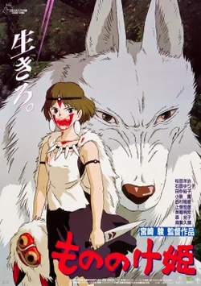
Princess Mononoke
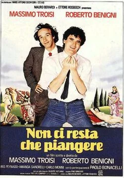
Nothing Left to Do But Cry
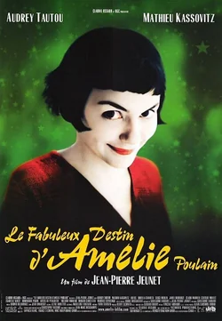
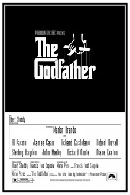
The Godfather
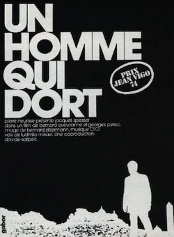
The Man Who Sleeps
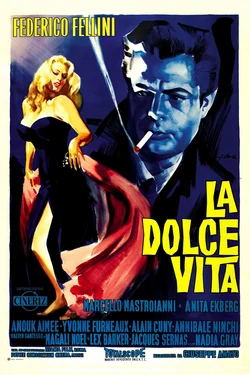
La Dolce Vita
La Jetée
News from Home
Close-Up
Untitled (Purple, White, and Red)
Untitled #12
Painting 190 x 222 cm, 5 February, 2012 (Peinture 190 x 222 cm, 5 février 2012)
Snow Window
The Order of the Angels (Die Ordnung der Engel)
Figure with Meat
Lord Goodman in his Yellow Pajamas
Short Circuit
The First Part of the Return from Parnassus
Improvisation No. 30 (Cannons)
Pissarra
Overgrown
Madvillainy
Pray for Paris
Endtroducing.....